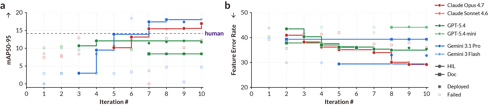

Embedded devices from wildlife monitoring stations to clinical wearables require local AI inference due to latency, communication, or privacy constraints. Optimizing models for heterogeneous microcontrollers (MCUs) requires simultaneously satisfying hard physical constraints on memory, power, and temperature while preserving accuracy, a multidimensional optimization that is today performed manually by experts. We ask whether an LLM agent can autonomously navigate this complex, multi-turn pipeline guided by real hardware feedback, and introduce a hardware-in-the-loop agent arena in which the agent iteratively refines both model and firmware—compiling, flashing, and measuring on real hardware—to enable closed-loop optimization. Frontier models, including Claude Opus 4.7 and Gemini 3.1 Pro, fail entirely without hardware feedback (0% deployment success), whereas our hardware-in-the-loop formulation achieves the first successful deployment within three iterations and can surpass human expert results within seven. This agentic co-optimization achieves 250x compression for vision models with <3.3% accuracy loss and 400x for audio with <6% Feature Error Rate loss, enabling battery-free operation on a commercial MCU via solar harvesting. We demonstrate practical impact in two real-world systems: an elk-detection camera trap (96.7% accuracy) and a phonetic-transcription wearable (8.44% FER) for child development research.
Best on-device mAP50-95 (YOLO11 on COCO) on the MAX78000, across three feedback conditions. Hardware-in-the-Loop (HIL) is the only condition that reliably produces successful deployments. Documentation (Doc) succeeds only once (with GPT-5.4), while the Score-only baseline never yields a successful deployment. The dashed line marks the human expert baseline (14.15%), which is outperformed by both Gemini 3.1 Pro (18.03%) and Claude Opus 4.7 (16.93%) using HIL.

Hardware-in-the-Loop Enables Iterative Improvement in Model Compression. a, YOLO on MAX78000, where Gemini 3.1 Pro surpasses the human expert best model 14.15% by iteration 7. b, Wav2Vec2 on STM32N6. In both tasks agents hill-climb steadily.
Use Python 3.10+ and start Docker before running benchmark jobs.
git clone https://github.com/ubicomplab/embedded-arena.git
cd embedded-arena
python3 -m venv .venv
source .venv/bin/activate
python -m pip install -U pip setuptools wheel
python -m pip install -e '.[providers,dev]'
cp .env.example .envEdit .env with the providers you plan to evaluate. Scripted smoke tests do not need keys.
OPENAI_API_KEY=...
GOOGLE_API_KEY=...
ANTHROPIC_API_KEY=...
set -a; source .env; set +aInstall only the assets and hardware SDKs needed for the experiments you will run.
./scripts/setup_coco_subset.py
huggingface-cli login
./scripts/setup_huggingface_assets.sh
./scripts/setup_max78000.sh
./scripts/setup_esp32.sh
./scripts/setup_stm32ai.sh /path/to/x-cube-ai-macarm-v10.2.0.zipSee full setup notes, data/assets, and hardware wiring.
The doctor and smoke checks verify Docker, assets, local SDK paths, and software-only synthesis/compile flows.
embedded-arena doctor
python scripts/check_configs.py
CLI_LLM_SCRIPT=examples/cli_smoke_gradient_flow.jsonl \
embedded-arena run configs/smoke/gradient-flow.yaml \
--llm cli/scripted --iterations 1 --output-dir outputs/smoke --overwriteStart with a single task/configuration, then scale to the required model set for contributions.
embedded-arena run configs/benchmarks/compression/max78000/hil.yaml \
--llm openai/gpt-5.4 \
--reasoning high \
--iterations 10 \
--output-dir outputs/max78000-hil-gpt54